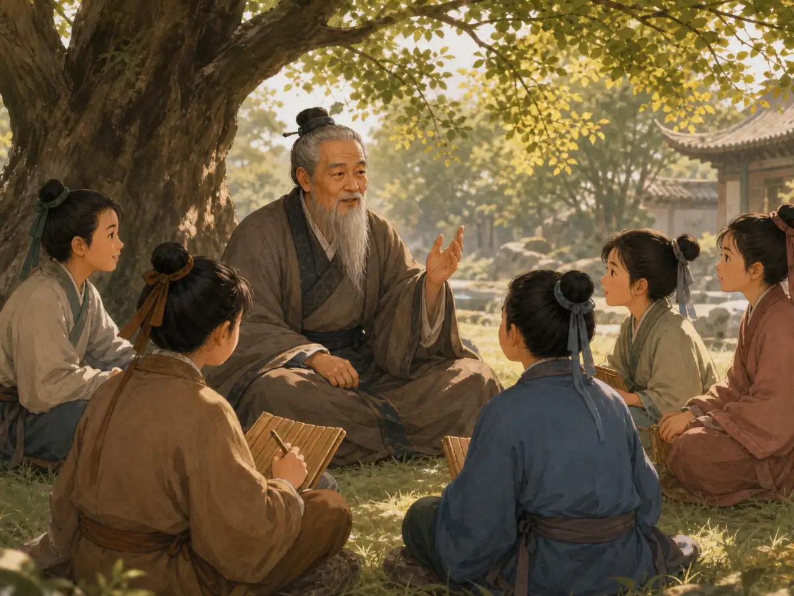

孔子的大问题：如果是你呢？
Confucius's Big Question: What If It Were You?
Page 1
一位很久以前的老师
A Teacher from Long Ago
两千五百多年前，中国有一位老师叫孔子。那时没有今天这样的学校。没有上课铃，也没有一排排课桌。
孔子和学生一起读书、提问、讨论。他觉得，学习不只是记住很多东西。我们还要学习怎样守信用，怎样改正错误，怎样和别人相处。
More than 2,500 years ago, a teacher named Confucius lived in China. His school did not have bells or rows of desks.
Confucius and his students read, asked questions, and talked about ideas. He believed that learning was about more than knowing many things. It was also about keeping promises, fixing mistakes, and treating people with care.

后来的人常常把孔子画成和学生一起学习的老师。
People often picture Confucius learning and talking with his students.
Page 2
一个可以用很久的办法
One Idea to Use Every Day
Before you act, ask how you would feel if someone did the same thing to you.
有一次，学生子贡问孔子：“有没有一个办法，可以让我一直用下去？”
孔子回答：“己所不欲，勿施于人。”意思是：你不希望别人这样对你，就不要这样对别人。
这句话在提醒我们，做一件事以前，先停一下。想一想：如果是我，我会有什么感觉？
In an old book, a student named Zigong asks Confucius for one idea he can use all his life.
Confucius tells him: Do not do something to another person if you would not want it done to you.
In other words, pause before you act. Ask yourself, “How would I feel if someone did this to me?”
Page 3
先停一下，再想一想
Stop and Think
你花了很久搭好一座积木城堡。有人跑过来，一下子把它推倒了。你会难过吗？下一次，当你看见别人的作品，就记住这种感觉。
朋友告诉你一个秘密。你也不希望别人到处讲你的秘密。所以，不要把它当成笑话说出去。
换位想一想，不是说你永远要同意别人。有人插队或者欺负同学，你可以说“不”，也可以请大人帮忙。尊重别人，也要保护自己。
You work hard to build a block castle. Someone runs over and knocks it down. Would you feel sad or angry? The next time you see another person's work, remember that feeling.
A friend tells you a secret. You would not want someone to share your secret with everyone. So do not turn your friend's secret into a joke.
Thinking about other people does not mean that you must always agree. If someone cuts in line or hurts another child, you can say no and ask an adult for help. You can be fair to others and stand up for yourself too.
Page 4
谁写下了这些话？
Who Wrote These Words Down?
孔子没有亲手写一本叫《论语》的书。他去世以后，人们继续讲他的故事和回答。后来，这些材料慢慢被整理成《论语》。子贡的问题，就保存在这本书里。
两千多年过去了，我们的学校和玩具都变了。不过，孔子的大问题还可以帮助我们：如果是我，我会有什么感觉？
Confucius did not write a book called The Analects. After he died, people kept passing along sayings and stories connected with him. Over time, many of them were gathered into that book. Zigong's question was saved there.
Schools and toys have changed since Confucius lived. His big question can still help us today: “What if it were me?”
《论语》保存了许多和孔子、学生有关的问答。
The Analects preserves many sayings and conversations connected with Confucius and his students.
明天再试一次
Try Again Tomorrow
这个问题不能马上解决所有麻烦。有时候，我们还要轮流、商量，或者请别人帮忙。
可是，它是一个很好的开始。今天忘记了，明天可以再试一次。每次愿意停下来想一想，我们就更会理解别人了。
One question cannot solve every problem. Sometimes we still need to take turns, make a plan, or ask for help.
But it is a good place to start. If you forget today, try again tomorrow. Every time you stop and think, you get a little better at understanding someone else.
孔子的一句话：先想想别人
Confucius's One-Life Question
Page 1
没有铃声和课桌的老师
A Teacher Without Bells or Desks
Later generations often pictured Confucius reading and talking with his students.
两千五百多年前，孔子出生在鲁国，地点在今天中国东部的沿海省份。看中国地图时，山东有一块半岛伸进黄海；北京在它的西北方向，上海在它的南边。曲阜一带。当时的中国还没有统一，许多国家彼此竞争，有时还会打仗。
孔子学习诗歌、音乐、古书和礼仪，也带着学生一起读书讨论。他们没有今天这样的教室。学生会提问，有时也会和老师争论。
孔子关心的不只是一个人知道多少。他还会问：这个人守信用吗？做错以后愿意反省吗？生气或者得意时，还能想到别人吗？
More than 2,500 years ago, Confucius was born in the state of Lu, near present-day Qufu in A coastal province in eastern China. On a map, its peninsula reaches into the Yellow Sea; Beijing is northwest of it, and Shanghai is farther south.. China was not yet one united country. Many states competed with one another, and sometimes they fought.
Confucius studied poetry, music, old books, and the rules for important ceremonies. He also taught. His students did not sit in a classroom with bells and rows of desks. They read, asked questions, and sometimes disagreed with their teacher.
Confucius cared about more than how much a person knew. Did that person keep promises? Could they look back at a mistake and learn from it? Could they remember other people even when they felt angry or proud?
Page 2
“有没有一个办法，可以用一辈子？”
“Is There One Idea I Can Use for Life?”
Switch places in your mind: how would you feel if someone did the same thing to you?
《论语》记录了一段很短的问答。学生子贡问孔子：“有没有一个字，或者一句话，可以让我用一辈子？”
孔子回答：“其恕乎！己所不欲，勿施于人。”这里的“恕”，不只是原谅别人。它要求我们从自己的感受出发，再试着理解另一个人。
你不希望别人怎样对你，就不要把同样的事加在别人身上。话很短，练起来却可能需要一辈子。
The Analects records one very short conversation. A student named Zigong asks Confucius, “Is there one word - or one idea - that I can use for my whole life?”
Confucius answers with the Chinese word shu, followed by a famous teaching: “What you do not want done to yourself, do not do to others.” Here, shu is not simply about forgiving someone. It asks you to begin with your own feelings and then make an effort to understand another person's.
The saying is short. Learning to live by it can take a lifetime.
Page 3
简单的话，难做的练习
A Simple Sentence and a Hard Practice
想象你花了很久搭好一座积木城堡，有人却为了好玩把它推倒。你会又生气又难过。下一次看见别人的作品时，这段记忆可以提醒你：不要把别人的心血当成玩笑。
如果朋友告诉你一件不想让大家知道的事，也可以先想想：我愿意自己的秘密变成大家的笑料吗？这一秒的停顿，可能保护一位朋友。
“恕”并不是要求我们永远同意别人，也不是说不能有规则。有人插队或欺负同学，我们可以制止，也可以请老师帮忙。重点是，不要用另一种不公平去回答不公平。
换位思考像写字和投篮一样，需要练习。今天没有做好，可以回头想一想；明天遇到新的事情，再试一次。
Imagine spending a long time on a block castle. Someone knocks it down just for fun. You would probably feel angry and hurt. The next time you see another person's creation, that memory can remind you not to treat their hard work like a joke.
Or suppose a friend tells you something private. Before repeating it, ask yourself whether you would want your own secret turned into playground news. One small pause may protect a friendship.
Shu does not mean agreeing with everyone or giving up rules. If someone cuts in line or bullies another child, you can stop them or ask a teacher for help. The point is not to answer unfairness with more unfairness.
Seeing from another person's side takes practice, just like handwriting or basketball. If you handle something badly today, think about it and try again tomorrow.
Page 4
《论语》不是孔子亲手写的
Confucius Did Not Write The Analects
The Analects brings together sayings and conversations connected with Confucius and his students.
孔子没有亲手写下一本叫《论语》的书。他去世以后，与他有关的谈话、回答和故事继续在人们之间流传。后来，追随他思想的人把许多材料整理成了《论语》。它更像一间有许多声音的屋子，而不是一本每天记录事情的传记。
传统说孔子教过三千名学生，其中七十二人特别出名。这些数字流传很广，却不能当成今天可以核对的班级名单。
我们知道的是，后来的人把孔子看成中国历史上最重要的老师之一。《论语》也影响了许多代学生、老师和家庭。不过，中国思想里还有许多别的书和声音。
Confucius did not sit down and write a book called The Analects. After his death, sayings, answers, and stories connected with him continued to circulate. People who followed his ideas later gathered many of them into the book. It is more like a room full of voices than a day-by-day life story.
Tradition says that Confucius had 3,000 students and that 72 became especially well known. Those famous numbers have traveled a long way through history. They are not an exact class list that historians can check today.
What we do know is that later generations remembered Confucius as one of China's most important teachers. The Analects influenced students, teachers, and families for centuries. It was a powerful voice in Chinese thought, but it was never the only one.
今天还能用的大问题
An Old Question for Today
孔子的这句话不能自动解决每一个问题。两个孩子都想玩同一个玩具时，他们还要学会轮流、商量，或者一起想出新办法。
但是，这句话给了我们一个很好的起点：不要只从自己的位置看事情。先问一句：“如果是我，会有什么感觉？”再决定下一步怎么做。
Confucius's saying cannot solve every problem by itself. If two children want the same toy, they still have to take turns, make a plan, or invent a way to play together.
But the saying gives us a strong place to begin. Do not look at a problem only from where you are standing. Ask, “How would this feel if it happened to me?” Then decide what to do next.
孔子的一句话：先把自己放到别人心里
Confucius’s Big Question: How Would It Feel to Be Them?
Page 1
一个动荡时代里的老师
A Teacher in a Troubled Time
Later generations often pictured Confucius reading and discussing ideas with his students.
两千五百多年前，孔子出生在鲁国 - 那是当时许多小国中的一个，位置在今天中国东部的沿海省份。看中国地图时，山东有一块半岛伸进黄海；北京在它的西北方向，上海在它的南边。的曲阜一带。那时的中国还没有统一，许多小国彼此来往、争夺，也常常打仗。大人们讨论的是怎样让国家变强；孔子却总在追问另一个问题：人怎样才能把日子过好，也和别人相处得好？
他读诗、学礼、研究古书，也带着学生一路学习、讨论。那并不是一所今天这样的学校：没有铃声，没有整齐的课桌。学生跟着老师读书、提问，有时还会认真争论。
孔子关心的并不只是“知道多少”。他更在意一个人会不会认真学习，会不会答应了事就做到，会不会在自己生气或得意的时候，仍然想到别人。
他常说的一个重要字是 仁。这个字很难用一个英文词完全说清，可以把它先理解成：心里装着别人，愿意用善意和责任去对待人。孔子觉得，这不是背会一句漂亮话就行，而是一辈子慢慢练出来的本领。
More than 2,500 years ago, Confucius was born in Lu, one of many states that existed before China was united. Lu lay near present-day Qufu in A coastal province in eastern China. On a map, its peninsula reaches into the Yellow Sea; Beijing is northwest of it, and Shanghai is farther south.. Its rulers formed alliances, competed for power, and sometimes went to war.
In a time when leaders worried about making their states stronger, Confucius kept asking a different kind of question: How can people live well and live well with one another?
He studied poetry, music, old texts, and the rules for important ceremonies. He also taught. This was not a modern school with bells and rows of desks. Students read, asked questions, and sometimes disagreed with their teacher.
To Confucius, learning was about more than collecting facts. Would a person keep a promise? Think carefully? Remember other people even while angry or proud? One idea that helped him explore these questions was ren (say “run”). No single English word captures it. A good starting point is “caring for other people and taking responsibility for how you treat them.” Confucius saw this as a lifelong practice, not a definition to memorize.
Page 2
“有没有一句话能用一辈子？”
“Is There One Idea I Can Use for My Whole Life?”
Try switching places in your mind: if you would not like it, do not do it to someone else.
《论语》里记着这样一段问答。这本书收集了许多和孔子、学生有关的谈话与问答。其中一位学生叫子贡。他问孔子：“有没有一个字，或者一句话，可以让我用一辈子去做？”孔子回答：“其恕乎！己所不欲，勿施于人。”
这里的“恕”，不是简单地说“算了吧”。它更像一种换位思考的能力：先从自己身上想一想，再去想别人会不会也有同样的感受。
“己所不欲，勿施于人”可以这样读：你自己不希望别人这样对你，就不要把同样的事加在别人身上。
比如，大家正在搭积木。你辛辛苦苦搭了一座小城堡，别人突然一把推倒，你会怎样？也许会又生气又难过。下一次，当你看见别人的作品时，这种记忆就提醒你：我不能因为好玩，就去毁掉它。
又比如，朋友讲了一件不想让大家知道的事。你当然也不喜欢自己的秘密被人到处说。那就先停一停，不把它当成好笑的新闻传出去。
The Analects preserves a brief exchange between Confucius and a student named Zigong. Zigong asks an enormous question: Is there one word - or one idea - that a person can practice for an entire life? Confucius answers with shu and the teaching, “What you do not want done to yourself, do not do to others.”
Here, shu is not simply the kind of forgiveness suggested by the English word “excuse.” It asks you to begin with your own experience and use it to imagine another person's.
Suppose you spend a long time building a block castle, and someone knocks it down for fun. The anger and disappointment you feel can teach you something the next time you see another person's work. Or suppose a friend tells you something private. Remembering how you would feel if your own secret became playground news may help you stop before passing it along.
Page 3
简单的话，难练的功课
Easy to Say, Hard to Practice
孔子的意思并不只是“别做坏事”。它还要求人多走一步：当你想说一句尖刻的话、抢一个机会、把麻烦推给别人时，先问自己：如果我是对方，我会觉得公平吗？
这句话听起来很简单，可真的做到并不容易。人着急时，只看得见自己的作业；人委屈时，只觉得自己最委屈；人赢了游戏时，也许根本没有注意到旁边输了的人。
所以，孔子讲“恕”并不是要大家永远同意别人，更不是说不可以有规则。有人插队、欺负同学，当然应该制止，也可以请老师帮忙。关键是，解决问题时别用同样不公平的办法回敬对方。
你可以说：“我也在等，请你排到后面。”这既是在保护自己，也是在尊重别人。这样做有时比大声吵回去更需要勇气。孔子还很看重学习和反省：今天做得不好，可以想一想；明天再试一次。像练写字、练投篮一样，学着体谅别人，也要一次一次地练。
Confucius was asking for more than “Do not be mean.” Before you say something cruel, grab an opportunity, or push a problem onto someone else, take one extra step: If I were in that person's place, would this feel fair?
The question is simple. Using it is hard. When we are in a hurry, our own task can seem like the only one that matters. When we are hurt, our pain feels largest. When we win, we may not notice the person who lost.
Shu does not mean agreeing with everyone or living without rules. If someone cuts in line or bullies another child, you can object and ask an adult for help. The lesson is not to answer one unfair act with another.
You might say, “I have been waiting too. Please go to the back of the line.” That protects your place without attacking the other person. Sometimes it takes more courage than shouting. Confucius also valued reflection: if you respond badly today, study your choice and try again tomorrow.
Page 4
《论语》从哪里来？
Where Did The Analects Come From?
The Analects gathered many conversations and questions connected with Confucius and his students.
孔子没有亲手写下一本叫《论语》的书。孔子去世以后，与他有关的谈话、问答和故事在不同人之间流传。后来，追随孔子思想的人把其中许多材料整理成了《论语》。它不是一本按日期写好的传记，更像一间能听见许多声音的小屋：有老师的回答，也有学生的问题，还有后人不断思考这些回答的痕迹。
后来的传统说孔子有“三千弟子”，其中“七十二贤人”特别出名。这些数目流传很广，但离孔子生活的年代已经很久，今天的历史学家不能把它们当成精确的班级名单。
我们能够确定的是：孔子后来被人们看作中国历史上最重要的老师之一，而《论语》也成了影响很深的一部经典。许多世纪里，读书人读它，老师讲它，家庭里的大人也会用里面的话提醒孩子。它影响过教育、家庭关系和人们对“好老师、好学生、好官员”的想象。不过，中国历史上还有许多别的思想家和书；《论语》很重要，却不是唯一的声音。
Confucius did not sit down and write a book called The Analects. After his death, sayings, questions, and stories connected with him continued to circulate. The collection took shape over time as people who followed his teachings gathered and passed on this material.
That makes The Analects unlike a biography that follows one life from day to day. It is closer to a room filled with voices: a teacher answering, students questioning, and later generations thinking about what those answers might mean.
Tradition says that Confucius taught 3,000 students and that 72 were especially accomplished. The numbers are famous, but they come through later traditions. Historians cannot treat them as an attendance sheet from Confucius's own classroom.
What is clear is the influence that followed. Later generations remembered Confucius as one of China's most important teachers, while The Analects became a classic read by students, explained by teachers, and quoted in families for centuries. It was never the only book or the only voice in Chinese thought. It was one of the most enduring.
一句话，今天还用得上吗？
Can One Old Sentence Still Help Us?
孔子的这句话没有告诉我们每一道难题的答案。比如，两位朋友都想玩同一个玩具，该怎么办？光说“我不喜欢被拒绝”，还不够；你们还得学着轮流、商量，或者一起想出新玩法。
但它给了我们一个很好的起点：不要只站在自己的位置上看事情。先把自己放到别人的心里，再决定下一步怎么做。
两千多年过去了，教室变了，玩具变了，孩子会遇到的新问题也变了。可每当有人愿意停下来想：“如果我是他，会有什么感觉？”孔子那句短短的话，就又在今天活了一次。
Confucius's line does not solve every problem by itself. If two friends want the same toy, “I do not like being told no” is only the beginning. They still have to take turns, negotiate, or invent a new way to play.
The line gives them a place to start: do not view the problem only from where you stand. Try the other person's position before deciding what to do next.
More than two thousand years have passed. Schools, toys, and the problems children face have changed. Yet whenever someone pauses to ask, “How would I feel if that happened to me?” Confucius's short answer comes alive again.